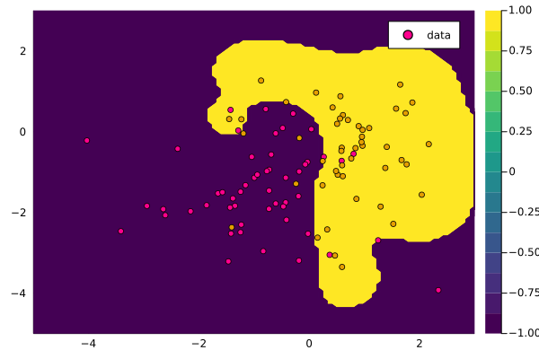

Support Vector Machine

You are seeing the HTML output generated by Documenter.jl and Literate.jl from the Julia source file. The corresponding notebook can be viewed in nbviewer.
using Distributions
using KernelFunctions
using LIBSVM
using LinearAlgebra
using Plots
using Random
# Set plotting theme
theme(:wong)
# Set seed
Random.seed!(1234);Number of samples:
N = 100;Select randomly between two classes:
y_train = rand([-1, 1], N);Random attributes for both classes:
X = Matrix{Float64}(undef, 2, N)
rand!(MvNormal(randn(2), I), view(X, :, y_train .== 1))
rand!(MvNormal(randn(2), I), view(X, :, y_train .== -1));
x_train = ColVecs(X);Create a 2D grid:
test_range = range(floor(Int, minimum(X)), ceil(Int, maximum(X)); length=100)
x_test = ColVecs(mapreduce(collect, hcat, Iterators.product(test_range, test_range)));Create kernel function:
k = SqExponentialKernel() ∘ ScaleTransform(2.0)Squared Exponential Kernel (metric = Distances.Euclidean(0.0))
- Scale Transform (s = 2.0)LIBSVM can make use of a pre-computed kernel matrix. KernelFunctions.jl can be used to produce that. Precomputed matrix for training (corresponds to linear kernel)
model = svmtrain(kernelmatrix(k, x_train), y_train; kernel=LIBSVM.Kernel.Precomputed)LIBSVM.SVM{Int64}(LIBSVM.SVC, LIBSVM.Kernel.Precomputed, nothing, 1, 2, [-1, 1], Int32[1, 2], Float64[], Int32[], LIBSVM.SupportVectors{Vector{Int64}, Matrix{Int64}}(66, Int32[34, 32], [-1, -1, -1, -1, -1, -1, -1, -1, -1, -1, -1, -1, -1, -1, -1, -1, -1, -1, -1, -1, -1, -1, -1, -1, -1, -1, -1, -1, -1, -1, -1, -1, -1, -1, 1, 1, 1, 1, 1, 1, 1, 1, 1, 1, 1, 1, 1, 1, 1, 1, 1, 1, 1, 1, 1, 1, 1, 1, 1, 1, 1, 1, 1, 1, 1, 1], [1 5 6 9 11 19 20 22 24 31 38 41 42 43 45 46 48 50 52 53 54 62 68 70 71 72 77 84 86 89 90 92 97 98 2 3 7 10 13 14 16 17 28 33 35 36 44 49 58 60 63 64 65 66 69 74 79 81 82 87 88 91 93 94 95 100], Int32[1, 5, 6, 9, 11, 19, 20, 22, 24, 31, 38, 41, 42, 43, 45, 46, 48, 50, 52, 53, 54, 62, 68, 70, 71, 72, 77, 84, 86, 89, 90, 92, 97, 98, 2, 3, 7, 10, 13, 14, 16, 17, 28, 33, 35, 36, 44, 49, 58, 60, 63, 64, 65, 66, 69, 74, 79, 81, 82, 87, 88, 91, 93, 94, 95, 100], LIBSVM.SVMNode[LIBSVM.SVMNode(0, 1.0), LIBSVM.SVMNode(0, 5.0), LIBSVM.SVMNode(0, 6.0), LIBSVM.SVMNode(0, 9.0), LIBSVM.SVMNode(0, 11.0), LIBSVM.SVMNode(0, 19.0), LIBSVM.SVMNode(0, 20.0), LIBSVM.SVMNode(0, 22.0), LIBSVM.SVMNode(0, 24.0), LIBSVM.SVMNode(0, 31.0), LIBSVM.SVMNode(0, 38.0), LIBSVM.SVMNode(0, 41.0), LIBSVM.SVMNode(0, 42.0), LIBSVM.SVMNode(0, 43.0), LIBSVM.SVMNode(0, 45.0), LIBSVM.SVMNode(0, 46.0), LIBSVM.SVMNode(0, 48.0), LIBSVM.SVMNode(0, 50.0), LIBSVM.SVMNode(0, 52.0), LIBSVM.SVMNode(0, 53.0), LIBSVM.SVMNode(0, 54.0), LIBSVM.SVMNode(0, 62.0), LIBSVM.SVMNode(0, 68.0), LIBSVM.SVMNode(0, 70.0), LIBSVM.SVMNode(0, 71.0), LIBSVM.SVMNode(0, 72.0), LIBSVM.SVMNode(0, 77.0), LIBSVM.SVMNode(0, 84.0), LIBSVM.SVMNode(0, 86.0), LIBSVM.SVMNode(0, 89.0), LIBSVM.SVMNode(0, 90.0), LIBSVM.SVMNode(0, 92.0), LIBSVM.SVMNode(0, 97.0), LIBSVM.SVMNode(0, 98.0), LIBSVM.SVMNode(0, 2.0), LIBSVM.SVMNode(0, 3.0), LIBSVM.SVMNode(0, 7.0), LIBSVM.SVMNode(0, 10.0), LIBSVM.SVMNode(0, 13.0), LIBSVM.SVMNode(0, 14.0), LIBSVM.SVMNode(0, 16.0), LIBSVM.SVMNode(0, 17.0), LIBSVM.SVMNode(0, 28.0), LIBSVM.SVMNode(0, 33.0), LIBSVM.SVMNode(0, 35.0), LIBSVM.SVMNode(0, 36.0), LIBSVM.SVMNode(0, 44.0), LIBSVM.SVMNode(0, 49.0), LIBSVM.SVMNode(0, 58.0), LIBSVM.SVMNode(0, 60.0), LIBSVM.SVMNode(0, 63.0), LIBSVM.SVMNode(0, 64.0), LIBSVM.SVMNode(0, 65.0), LIBSVM.SVMNode(0, 66.0), LIBSVM.SVMNode(0, 69.0), LIBSVM.SVMNode(0, 74.0), LIBSVM.SVMNode(0, 79.0), LIBSVM.SVMNode(0, 81.0), LIBSVM.SVMNode(0, 82.0), LIBSVM.SVMNode(0, 87.0), LIBSVM.SVMNode(0, 88.0), LIBSVM.SVMNode(0, 91.0), LIBSVM.SVMNode(0, 93.0), LIBSVM.SVMNode(0, 94.0), LIBSVM.SVMNode(0, 95.0), LIBSVM.SVMNode(0, 100.0)]), 0.0, [0.0011515178246988868; 1.0; 1.0; 0.8930493877799983; 0.2641190263588175; 1.0; 0.5244764472516993; 1.0; 1.0; 1.0; 0.8905706185492047; 0.3295945458044202; 1.0; 0.860978815089442; 0.06683377730458326; 1.0; 0.5367171980111412; 0.6534975532149773; 0.08305132933896073; 0.39430290196152556; 0.8926136440135181; 1.0; 0.7293682767212791; 1.0; 0.5286072085658116; 1.0; 1.0; 1.0; 1.0; 0.7409431996238991; 1.0; 0.5185305984259766; 0.12998947221457693; 0.47427088502460657; -0.8331283226322113; -0.5010491777775455; -1.0; -0.7808830607197881; -0.16244354814614123; -1.0; -1.0; -1.0; -1.0; -0.7215475396879995; -1.0; -0.13281444073688553; -1.0; -0.24528817001444883; -1.0; -0.5591078904088818; -1.0; -0.3683419909655691; -0.14057533868554514; -0.7998366322570258; -1.0; -1.0; -0.9120643791060599; -1.0; -1.0; -1.0; -1.0; -0.34875169623048013; -0.006834215710554889; -1.0; -1.0; -1.0], Float64[], Float64[], [-0.10543655890804106], 3, 0.01, 200.0, 0.001, 1.0, 0.5, 0.1, true, false)Precomputed matrix for prediction
y_pr, _ = svmpredict(model, kernelmatrix(k, x_train, x_test));Compute prediction on a grid:
contourf(test_range, test_range, y_pr)
scatter!(X[1, :], X[2, :]; color=y_train, lab="data", widen=false)
This page was generated using Literate.jl.